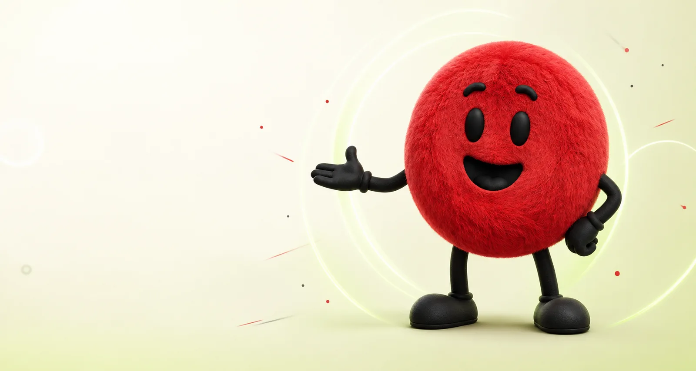
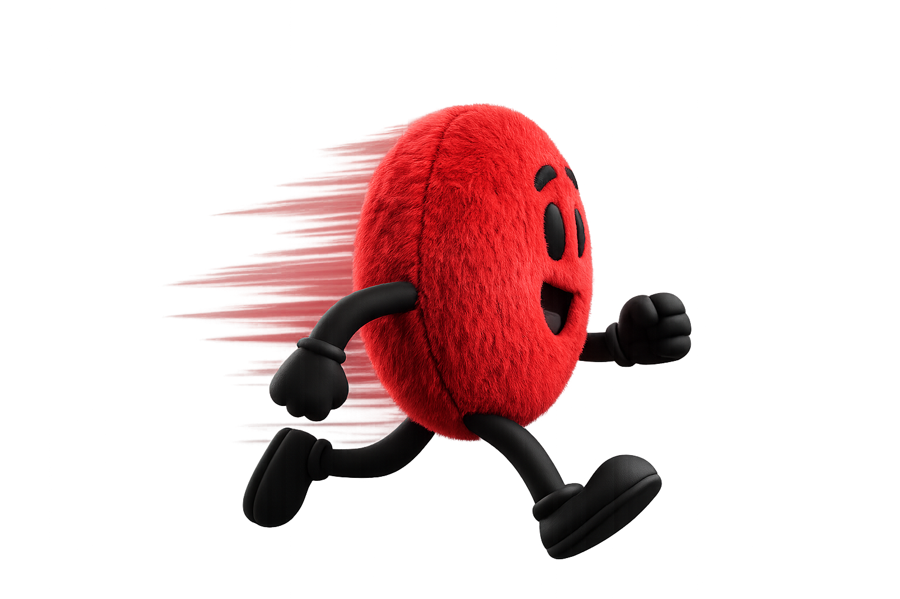

For individuals · Free
Free Innovation Pulse Check
A fast, honest read on how innovation is really experienced inside your organisation — with a personalised score you can use immediately.

Innovation capability assessment
Oxy helps you turn instinct into insight. Measure how your organisation innovates across five critical pillars — then see exactly what to strengthen next.
Choose your depth
Start with your own experience, or build a shared picture across your whole organisation.
A fast, honest read on how innovation is really experienced inside your organisation — with a personalised score you can use immediately.
Bring executives, employees, customers and partners into one evidence-based diagnosis — complete with stakeholder gaps, heatmaps and a practical roadmap.
The five vital signs
A weakness in one pillar can cap the rest. InnoPulse shows you where energy is flowing — and where it’s getting stuck.
A clear, funded innovation ambition linked to business strategy.
The gates and portfolio governance that move ideas to launch.
Leadership, skills and the safety to experiment and learn.
The behaviours that make experimentation safe and routine.
Measurement and the discipline to scale what works.
How it works
A simple progression from insight to action — without burying your team in theory.
Build an evidence-based baseline across the five pillars with a focused assessment.
See strengths, blockers and the single pillar holding the rest of your system back.
Close the gaps with strategy, systems, training and practical delivery support.

“Innovation shouldn’t depend on a lucky heartbeat.”
Oxy’s rule #1Make the system visible, then make it stronger.
Beyond the assessment
Once you know where you stand, The Growth System helps you make innovation a managed, repeatable capability — from strategy to hands-on delivery.
A funded innovation strategy, a right-sized innovation management system, ISO 56001 advisory and readiness, and an idea management pipeline that moves ideas from capture to delivery.
Practical innovation training, innovation culture development, facilitated innovation workshops, and the hands-on InnoDrive programme that pairs capability building with real delivery.
Start with the free innovation capability assessment, then go deeper with InnoPulse Full-Scale — a multi-stakeholder organisational diagnosis across executives, employees, customers and partners.
Outsourced innovation management gives you an experienced innovation function on demand, while end-to-end innovation consulting supports strategy, process, culture and measurement across South Africa.
Explore the full range of innovation services at thegrowthsystem.com.
Good questions
The essentials, explained without the consulting fog.
It is a structured way to measure how well your organisation turns ideas into value. InnoPulse looks beyond idea volume to the strategy, processes, people, culture and delivery systems that make innovation repeatable.
Anyone who wants an honest read on how innovation is experienced in their organisation. It is useful for leaders, managers, innovation teams and employees alike.
It compares perspectives across stakeholder groups, revealing gaps that a single survey average can hide. The result is an executive-ready diagnosis and a clearer roadmap for action.
You receive a clear view of strengths and blockers. The Growth System can then help you prioritise improvements through strategy, ISO 56001 advisory, training, idea management and hands-on implementation support.
Your next move
Take the free Pulse Check now, or talk to The Growth System about a full organisational diagnosis.